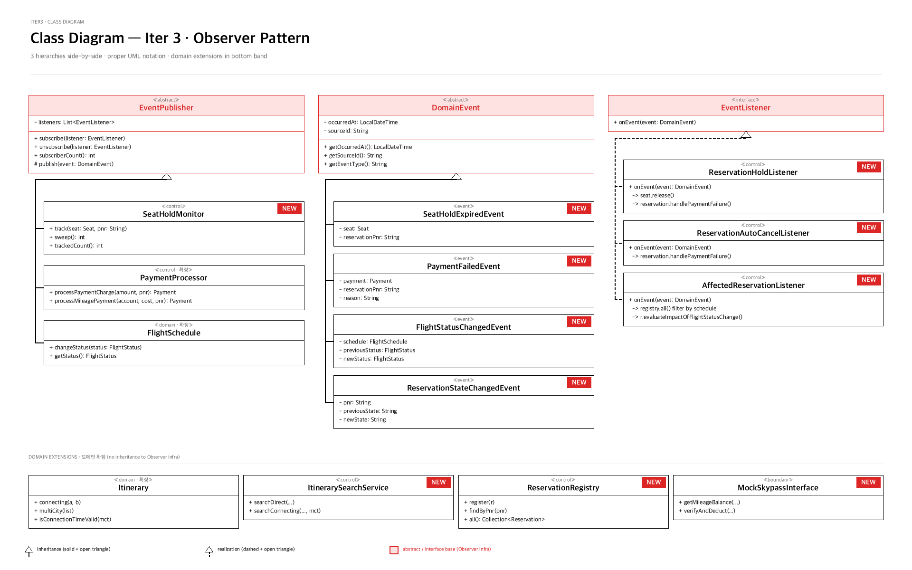

UML — Class Diagram (Iter 3 · Observer family + 도메인 확장)
08 / 24
CLASS DIAGRAM · 12 NEW · 3 MODIFIED
Observer 인프라 + Bus add-on까지 — NEW badge로 표시

classDiagram-iter3.png
missing — run python3 tools/generate_diagram_assets.py
NEW
iter3 신규 (12개)
Observer abstract / interface base
solid line + 삼각형 = inheritance
dashed line + 삼각형 = realization
side spine routing — 화살표가 concrete box 위 통과 안 함